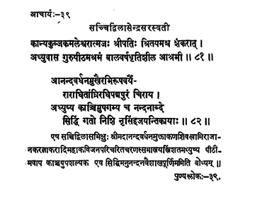

39. आचार्य - 39 - सच्चित्द्विलासेन्द्रसरस्वती
कान्यकुब्ज ••• आश्रमी ॥ ८१ ॥
आनदवर्धन ••• नृसिंहजयन्तिकायाः ॥ ८२ ॥
एष ••• बोध्यम् ॥
Son of Kamaleśvara Śrīpati, having received the initiation from Śaṅkara, the sage (preceptor) with an ability to endure heat and cold easily, remained in the guru pīṭha.
Adorned by the erudites like Ānandavardhana etc., residing at Pamapuram for a long time and then, having reached Kāñci, he attained siddhi on the night of Narasimha Jayanti in the year Nandana.
This saint Saccidvilāsa, adored by Śrī Ānandavardhana, Muktākaṇa, Śivasāmi and Rājāakaralākara remained in the pīṭha for thirty-three years and attained siddhi near Kāñci on the full moon day of Vaiśāka month in the year Nandana.
